10 Layouts
In Spec, layouts are represented by instances of layout classes. The layout classes encode different positioning of elements such as box, paned, or grid. This chapter presents the available layouts, their definition, and how layouts can be reused when a presenter reuses other presenters.
10.1 Basic principle reminder
Spec expects that layout objects, instances of the layout classes, are associated with a presenter. Each presenter should describe the positioning of its subpresenters.
Contrary to Spec 1.0, where layouts were only defined at the class level, in Spec 2.0, to define the layout of a presenter you can:
- Define the
defaultLayoutmethod on the instance side - Use the message
layout:in yourinitializePresentersmethod to set an instance of layout in the current presenter.
The message defaultLayout returns a layout and layout: sets a layout, for example, an instance of SpBoxLayout or SpPanedLayout. These two methods are the preferred way to define layouts.
Note that the possibility of defining a class-side accessor e.g. defaultLayout remains for those who prefer it.
This new design reflects the dynamic nature of layouts in Spec, and the fact that you can compose them using presenter instances directly, not forcing you to declare subpresenters in instance variables upfront, and then use their names as it was done in Spec 1.0. It is, however, possible that there are cases where you want a layout "template"... so you can still do it.
10.2 A running example
To be able to play with the layouts defined in this chapter, we define a simple presenter named TwoButtons.
SpPresenter << #TwoButtons
slots: { #button1 . #button2 };
package: 'CodeOfSpec20Book'We define a simple initializePresenters method as follows:
TwoButtons >> initializePresenters
button1 := self newButton.
button2 := self newButton.
button1 label: '1'.
button2 label: '2'10.3 BoxLayout (SpBoxLayout and SpBoxConstraints)
The class SpBoxLayout displays presenters in an ordered sequence of boxes. A box layout can be horizontal or vertical and presenters are ordered left to right and top to bottom respectively. A box layout can be composed of other layouts.
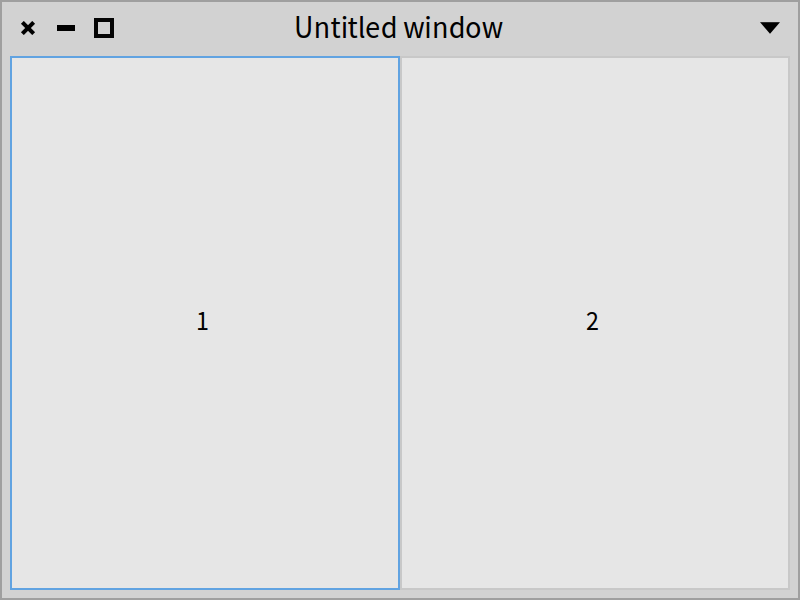
Let us define a first simple layout as follows and whose result is displayed in Figure 10.1.
TwoButtons >> defaultLayout
^ SpBoxLayout newLeftToRight
add: button1;
add: button2;
yourselfWhat we see is that by default a subpresenter expands its size to fit the space of its container.
An element in a vertical box will use all available horizontal space, and fill vertical space according to the rules. This is inversed in a horizontal box.
We can refine this layout to indicate that the subpresenters should not expand to their container using the message add:expand:. The result is shown in Figure 10.2.
TwoButtons >> defaultLayout
^ SpBoxLayout newLeftToRight
add: button1 expand: false;
add: button2 expand: false;
yourself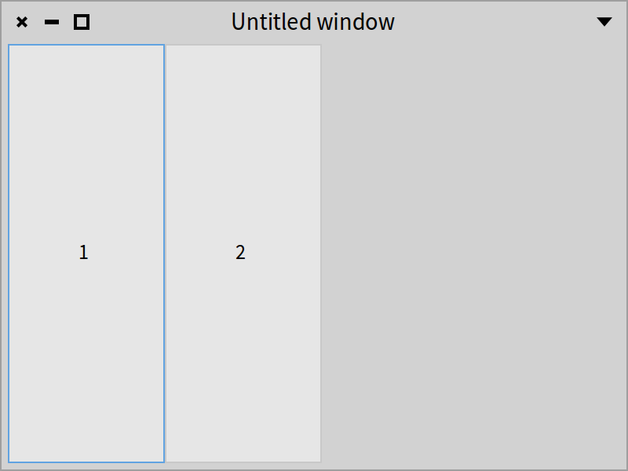
The full message to add presenters is: add:expand:fill:padding:
expand:argument - when true, the new child is to be given extra space allocated to the box. The extra space is divided evenly between all children that use this option.fill:argument - when true, the space given to a child by the expand option is actually allocated to the child, rather than just padding it. This parameter has no effect ifexpandis set tofalse.padding:argument - extra space in pixels to put between this child and its neighbors, over and above the global amount specified by thespacingproperty. If a child is a widget at one of the reference ends of the box, then padding pixels are also put between the child and the reference edge of the box.
To illustrate this API a bit, we change the defaultLayout method as follows. The result is shown in Fig 10.3. We want to stress, however, that it is better not to use a fixed height or padding.
TwoButtons >> defaultLayout
^ SpBoxLayout newTopToBottom
spacing: 15;
add: button1 expand: false fill: true padding: 5;
add: button2 withConstraints: [ :constraints |
constraints height: 80; padding: 5 ];
yourself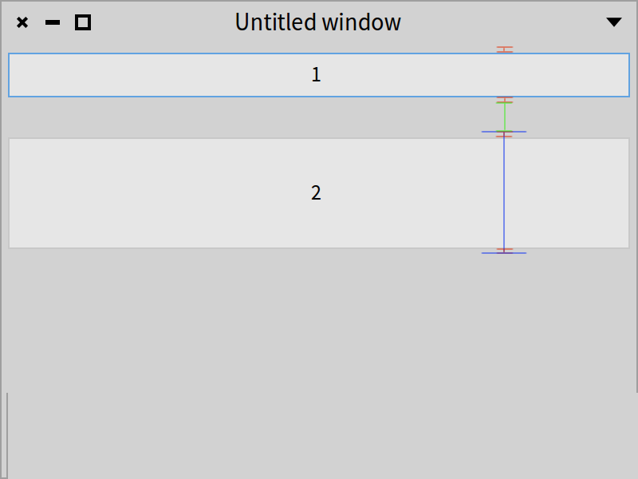
The annotations in the figure indicate the padding in red, the height of button2 in blue, and the spacing in green. Note that the padding of button2 is included in the height of the button.
The defaultLayout method sends the message withConstraints: [ :constraints | constraints height: 80; padding: 5 ]. This message allows setting constraints when the often used messages add:, add:expand:, and add:expand:fill:padding: do not cover your particular use case. The constraints argument of the block is an instance of the SpBoxConstraints class.
10.4 Box layout alignment
A box layout can be configured with horizontal and vertical alignment of the children. These are the horizontal alignment options, which are messages that can be sent to a SpBoxLayout instance:
- hAlignStart
- hAlignCenter
- hAlignEnd
These are the vertical layout options:
- vAlignStart
- vAlignCenter
- vAlignEnd
10.5 Box alignment example
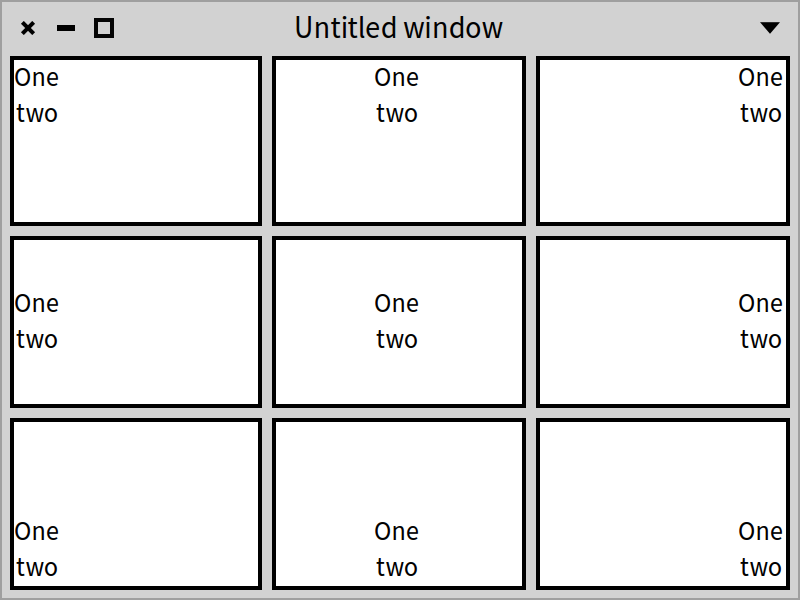
Let's see how this works in a small example as shown in Figure 10.4. We will create a presenter with 9 subpresenters, which we call "tiles", laid out in 3 rows with 3 columns. Each subpresenter displays two label presenters with the labels 'One' and 'Two'. The presenter class defines nine instance variables. The names refer to the position of the content inside each tile.
SpPresenter << #AlignmentExample
slots: {
#northWest .
#north .
#northEast .
#west .
#center .
#east .
#southWest .
#south .
#southEast };
package: 'CodeOfSpec20Book'As always, initializePresenters binds the instance variables that hold the subpresenters. It uses a helper method newTile: to create the tiles.
AlignmentExample >> initializePresenters
northWest := self newTile: [ :tileLayout |
tileLayout vAlignStart; hAlignStart ].
north := self newTile: [ :tileLayout |
tileLayout vAlignStart; hAlignCenter ].
northEast := self newTile: [ :tileLayout |
tileLayout vAlignStart; hAlignEnd ].
west := self newTile: [ :tileLayout |
tileLayout vAlignCenter; hAlignStart ].
center := self newTile: [ :tileLayout |
tileLayout vAlignCenter; hAlignCenter ].
east := self newTile: [ :tileLayout |
tileLayout vAlignCenter; hAlignEnd ].
southWest := self newTile: [ :tileLayout |
tileLayout vAlignEnd; hAlignStart ].
south := self newTile: [ :tileLayout |
tileLayout vAlignEnd; hAlignCenter ].
southEast := self newTile: [ :tileLayout |
tileLayout vAlignEnd; hAlignEnd ]Note that the block argument of the newTile: message has a titleLayout argument, which is bound to an instance of SpBoxLayout. Inside the nine blocks, the alignment messages that we saw earlier are sent to configure the alignment inside the tiles. For instance, for the top-left tile called "northWest", vAlignStart is sent to align to the top side of the tile, and hAlignStart is sent to align to the left side of the tile.
AlignmentExample >> newTile: alignmentBlock
| tileLayout |
tileLayout := SpBoxLayout newTopToBottom
add: self newLabelOne;
add: self newLabelTwo;
yourself.
alignmentBlock value: tileLayout.
^ SpPresenter new
layout: tileLayout;
addStyle: 'tile';
yourselfThe method newTile: uses two other helper methods:
AlignmentExample >> newLabelOne
^ self newLabel
label: 'One';
yourselfAlignmentExample >> newLabelTwo
^ self newLabel
label: 'two';
yourselfThe layout of the window is defined with:
AlignmentExample >> defaultLayout
^ SpBoxLayout newTopToBottom
spacing: 5;
add: (self rowWithAll: { northWest . north . northEast });
add: (self rowWithAll: { west . center . east });
add: (self rowWithAll: { southWest . south . southEast });
yourselfIt answers a vertical box layout with three rows. It applies a spacing of 5 pixels between the rows. It sends rowWithAll: three times to create horizontal box layouts with three subpresenters each. rowWithAll: applies the same spacing of 5 pixels between the tiles in a row.
AlignmentExample >> rowWithAll: tiles
| row |
row := SpBoxLayout newLeftToRight
spacing: 5;
yourself.
tiles do: [ :tile | row add: tile ].
^ rowFor demonstration purposes, we apply a stylesheet to display tiles with a white background and a black border.
AlignmentExample >> application
^ SpApplication new
addStyleSheetFromString: '.application [
.tile [
Container { #borderWidth: 2, #borderColor: #black },
Draw { #backgroundColor: #white } ]
]';
yourselfNow we have all the code we need to open the window with:
AlignmentExample new openThe result is shown in Figure 10.4. Each tile displays the label presenters at another location. The label presenters are positioned vertically.
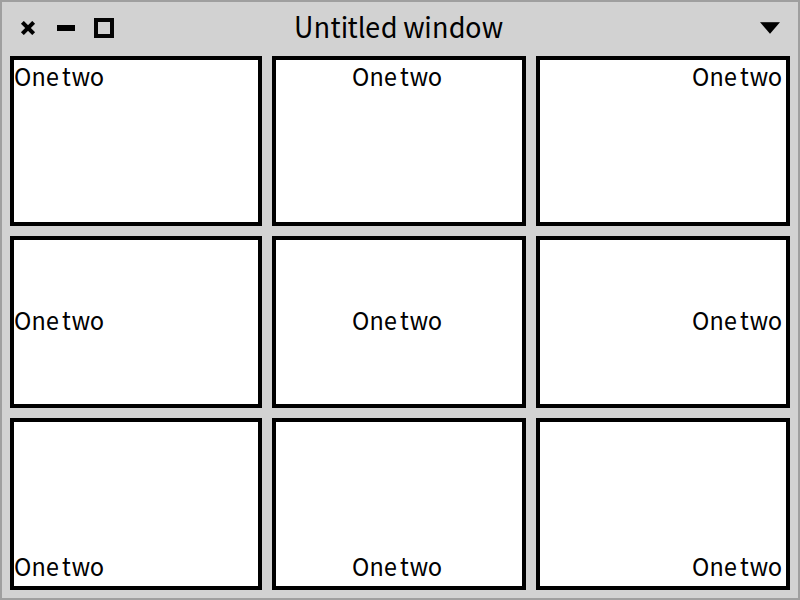
10.6 Alignment in horizontal box layout
Let's see what happens when we put the label presenters in a horizontal box layout.
AlignmentExample >> newTile: alignmentBlock
| tileLayout |
tileLayout := SpBoxLayout newLeftToRight
add: self newLabelOne;
add: self newLabelTwo;
yourself.
alignmentBlock value: tileLayout.
^ SpPresenter new
layout: tileLayout;
addStyle: 'tile';
yourselfFigure 10.5 shows the result of opening the window again. Now the labels are positioned horizontally.
10.7 A more advanced layout
Now that we know how to align nested presenters, let's have a look at a common use case. Suppose we like to arrange three buttons in a row of which two are positioned on the left side of the window, and one is positioned on the right side. That setup is very handy for button bars with buttons on the left side and on the right side, such as in the Repositories browser of Iceberg, as you can see in Figure 10.6. The bar has one button on the left side and two buttons on the right side.
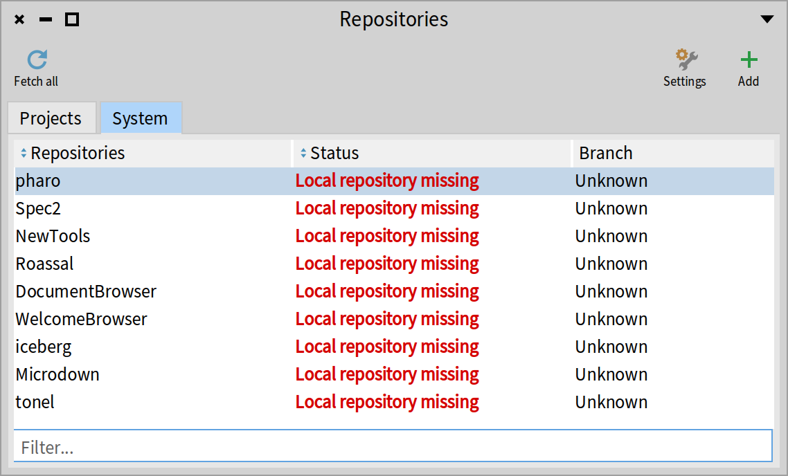
Let's create a new presenter class called ButtonBar:
SpPresenter << #ButtonBar
slots: { #button1 . #button2 . #button3 };
package: 'CodeOfSpec20Book'We initialize the three buttons:
ButtonBar >> initializePresenters
button1 := self newButton.
button2 := self newButton.
button3 := self newButton.
button1 label: '1'.
button2 label: '2'.
button3 label: '3'We use a layout that has two sublayouts, one for two buttons on the left, and one for the third button on the right. We apply a 15 pixel spacing between the buttons on the left.
ButtonBar >> defaultLayout
| left right |
left := SpBoxLayout newLeftToRight
spacing: 15;
add: button1 expand: false;
add: button2 expand: false;
yourself.
right := SpBoxLayout newLeftToRight
add: button3 expand: false;
yourself.
^ SpBoxLayout newLeftToRight
add: left;
add: right;
yourselfWhen opening this presenter with ButtonBar new open, we see the window shown in Figure 10.7.
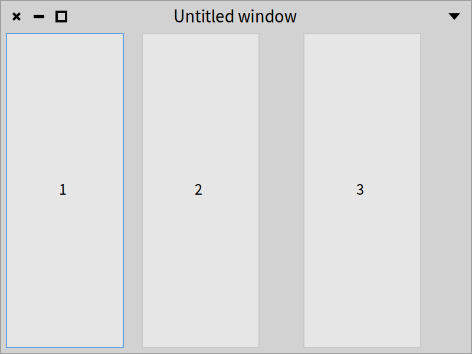
The layout is not exactly what we had in mind. The third button is not positioned on the right side. That is where the alignment from the pevious section comes in. Let's change the defaultLayout method to align the button with the end of the right box layout. We add the message hAlignEnd:
ButtonBar >> defaultLayout
| left right |
left := SpBoxLayout newLeftToRight
spacing: 15;
add: button1 expand: false;
add: button2 expand: false;
yourself.
right := SpBoxLayout newLeftToRight
hAlignEnd;
add: button3 expand: false;
yourself.
^ SpBoxLayout newLeftToRight
add: left;
add: right;
yourselfWhen we open the presenter again, we see the window shown in Figure 10.8. That is the layout we had in mind.
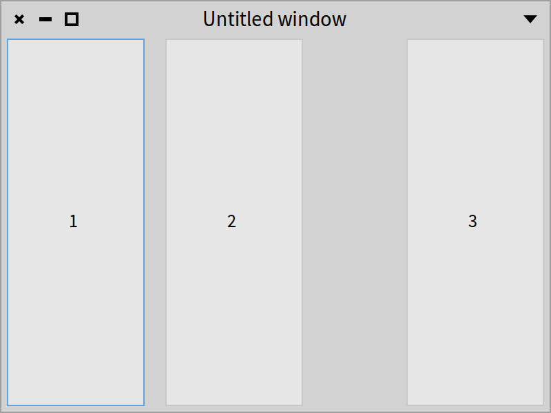
This example shows that advanced layout requires nesting layouts to achieve the desired result.
10.8 Example setup for layout reuse
Before presenting some of the other layouts, we show an important aspect of Spec presenter composition: a composite can declare that it wants to reuse a presenter using a specific layout of a presenter.
Consider our artificial example of a two-button UI. Let us use two layouts as follows. We define two class methods returning different layouts. Note that we could define such methods on the instance side to. We define them on the class side to be able to get the layouts without an instance of the class.
TwoButtons class >> buttonRow
^ SpBoxLayout newLeftToRight
add: #button1;
add: #button2;
yourselfTwoButtons class >> buttonColumn
^ SpBoxLayout newTopToBottom
add: #button1;
add: #button2;
yourselfNote that when we define the layout at the class level, we use a symbol whose name is the corresponding instance variable. Hence we use #button2 to refer to the presenter stored in the instance variable button2.
10.9 Opening with a layout
The message openWithLayout: lets you specify the layout you want to use when opening a presenter.
Here are some examples:
TwoButtons new openWithLayout: TwoButtons buttonRowplaces the buttons in a row.TwoButtons new openWithLayout: TwoButtons buttonColumnplaces them in a column.
We define a defaultLayout method which invokes one of the previously defined methods so that the presenter can be opened without giving a layout.
TwoButtons >> defaultLayout
^ self class buttonRow10.10 Better design
We can do better and define two instance level methods to encapsulate the layout configuration.
TwoButtons >> beColumn
self layout: self class buttonColumnTwoButtons >> beRow
self layout: self class buttonRowThen we can write the following script:
TwoButtons new
beColumn;
open10.11 Specifying a layout when reusing a presenter
Having multiple layouts for a presenter implies that there is a way to specify the layout to use when a presenter is reused. This is simple. We use the method layout:. Here is an example. We create a new presenter named ButtonAndListH.
SpPresenter << #ButtonAndListH
slots: { #buttons . #list };
package: 'CodeOfSpec20Book'ButtonAndListH >> initializePresenters
buttons := self instantiate: TwoButtons.
list := self newList.
list items: (1 to: 10)ButtonAndListH >> initializeWindow: aWindowPresenter
aWindowPresenter title: 'SuperWidget'ButtonAndListH >> defaultLayout
^ SpBoxLayout newLeftToRight
add: buttons;
add: list;
yourselfThis ButtonAndListH class results in a SuperWidget window as shown in Figure 10.9. It reuses the TwoButtons presenter and places all three presenters in a horizontal order because the TwoButtons presenter uses the buttonRow layout method by default.
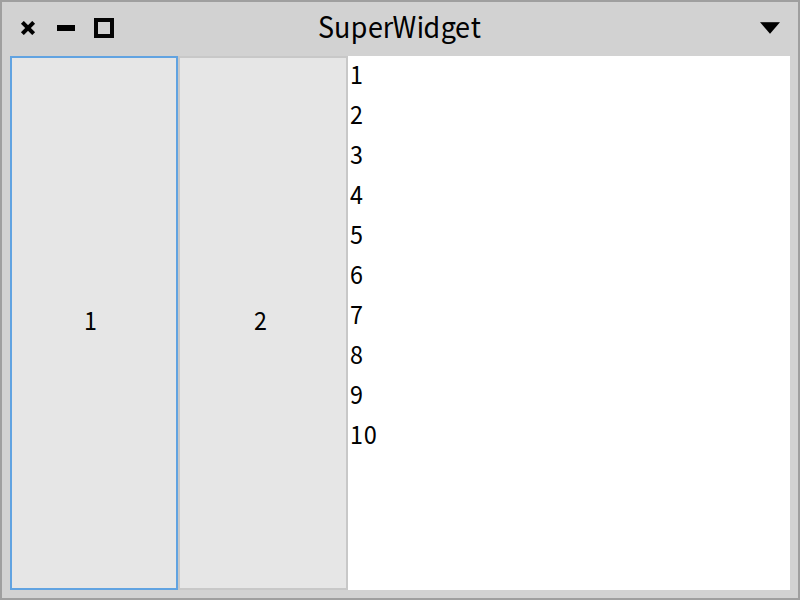
Alternatively, we can create ButtonAndListV class as a subclass of ButtonAndListH and only change the initializePresenters method as below. It specifies that the reused buttons widget should use the buttonColumn layout method, and hence results in the window shown in Figure 10.10.
ButtonAndListH << #ButtonAndListV
slots: {};
package: 'CodeOfSpec20Book'ButtonAndListV >> initializePresenters
super initializePresenters.
buttons beColumn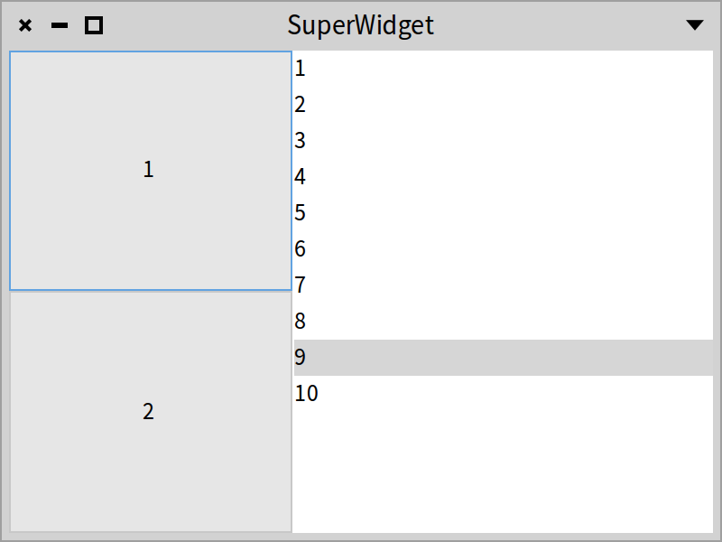
10.12 Alternative to declare subcomponent layout choice
The alternative is to define a new method defaultLayout and to use the add:layout: message. We define a different presenter.
ButtonAndListH << #ButtonAndListV2
slots: {};
package: 'CodeOfSpec20Book'We define a new defaultLayout method as follows:
ButtonAndListV2 >> defaultLayout
^ SpBoxLayout newTopToBottom
add: buttons layout: #buttonColumn;
add: list;
yourselfNote the use of the message add:layout: with the selector of the method returning the layout configuration: #buttonColumn. This is normal since we cannot access the state of a subcomponent at this moment. Let's open a window with:
ButtonAndListV2 new openThat opens the window shown in Figure 10.11.
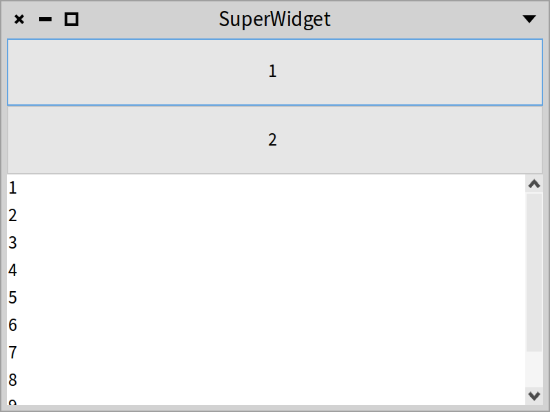
10.13 Dynamically changing a layout
It is possible to change the layout of a presenter dynamically, for example from an inspector. Open the presenter with:
ButtonAndListV new inspect openThat opens an inspector on the presenter, and a window with the buttons placed vertically as shown in Figure 10.10.
Then select the 'buttons' instance variable in the inspector and do self beRow. The result is shown Figure 10.12.
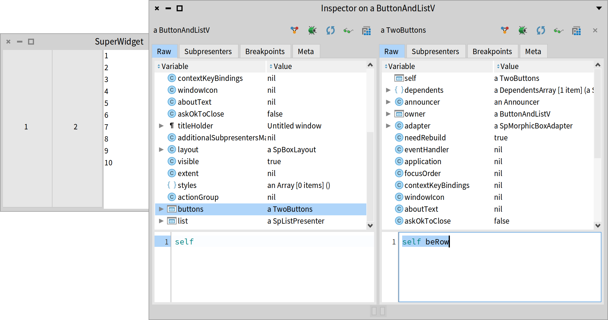
10.14 Grid layout (SpGridLayout)
The class SpGridLayout arranges subpresenters in a grid according to certain layout properties such as:
- A position that is mandatory (
columnNumber@rowNumber) and - A span that can be added if desired (
columnExtension@rowExtension)
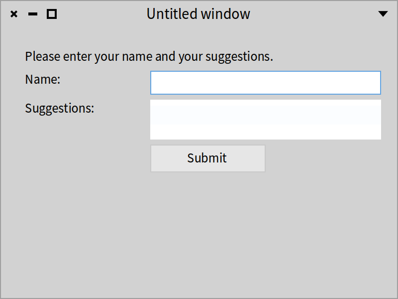
The following example opens a window with a grid layout with several widgets, as shown in Figure 10.13.
SpPresenter << #GridExample
slots: { #promptLabel . #nameText . #suggestionsText . #submitButton };
package: 'CodeOfSpec20Book'GridExample >> initializePresenters
promptLabel := self newLabel
label: 'Please enter your name and your suggestions.';
yourself.
nameText := self newTextInput.
suggestionsText := self newText.
submitButton := self newButton
label: 'Submit';
yourselfGridExample >> defaultLayout
^ SpGridLayout new
add: #promptLabel at: 1@1 span: 3@1;
add: 'Name:' at: 1@2;
add: #nameText at: 2@2 span: 2@1;
add: 'Suggestions:' at: 1@3;
add: #suggestionsText at: 2@3 span: 2@1;
add: #submitButton at: 2@4 span: 1@1;
yourselfThe layout defines a grid with three columns. The prompt 'Please enter your name and your suggestions.' spans the three columns. The labels of the two fields are put in the first column. The fields span the second and the third column. The button is put in the second column. The second field is a multi-line text field. That is why it is higher than the first field, which is a single-line text field.
Here is a list of options:
columnHomogeneous: Whether presenters in a column will have the same size.rowHomogeneous: Whether presenters a row will have the same size.colSpacing:: The horizontal space between cells.rowSpacing:: The vertical space between cells.
The defaultLayout method of the example maybe hard to read, especially when the grid contains a lot of presenters. The reader has to compute the positions and the spans of the subpresenters. We can use a SpGridLayoutBuilder to make grid building easier. The class is not to be used directly. Instead send build: to a SpGridLayout. Below is an alternative defaultlayout method that produces the same result as before. By putting all presenters of one row on one line, it is clear that there are four rows, and it is clear which subpresenters are part of the same row.
GridExample >> defaultLayout
^ SpGridLayout build: [ :builder |
builder
add: #promptLabel span: 3@1; nextRow;
add: 'Name:'; add: #nameText span: 2@1; nextRow;
add: 'Suggestions:'; add: #suggestionsText span: 2@1; nextRow;
nextColumn; add: #submitButton ]10.15 Paned layout (SpPanedLayout)
A paned layout is like a box layout, but restricted to two children, which are the "panes". It places children in a vertical or horizontal fashion and adds a splitter in between, that the user can drag to resize the panes. The message positionOfSlider: indicates the original position of the splitter. It can be nil (then it defaults to 50%), or it can be a percentage (e.g. 70 percent), a Float (e.g. 0.7), or a Fraction (e.g. 7/10). We prefer simplicity and use floats because there are cheap and simple.
Let's look at this simple example:
SpPresenter << #PanedLayoutExample
slots: { #leftList . #rightList };
package: 'CodeOfSpec20Book'PanedLayoutExample >> initializePresenters
leftList := self newList
items: (1 to: 10);
yourself.
rightList := self newList
items: ($a to: $z);
yourselfPanedLayoutExample >> defaultLayout
^ SpPanedLayout newLeftToRight
positionOfSlider: 0.7;
add: #leftList;
add: #rightList;
yourselfLet's open the presenter with:
PanedLayoutExample new openFigure 10.14 shows the result. The left list takes 70% of the width of the window and the right list takes 30%.
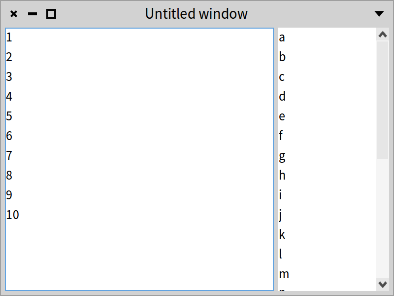
10.16 Overlay layout (SpOverlayLayout)
An overlay layout allows overlaying one presenter by other presenters.
As an example, we will create a presenter that shows a button labeled 'Inbox', with a red indicator overlayed in the top-right corner (See Figure 10.15). A use case could be indicating that there are unread messages in the inbox.
SpPresenter << #OverlayLayoutExample
slots: { #button . #indicator };
package: 'CodeOfSpec20Book'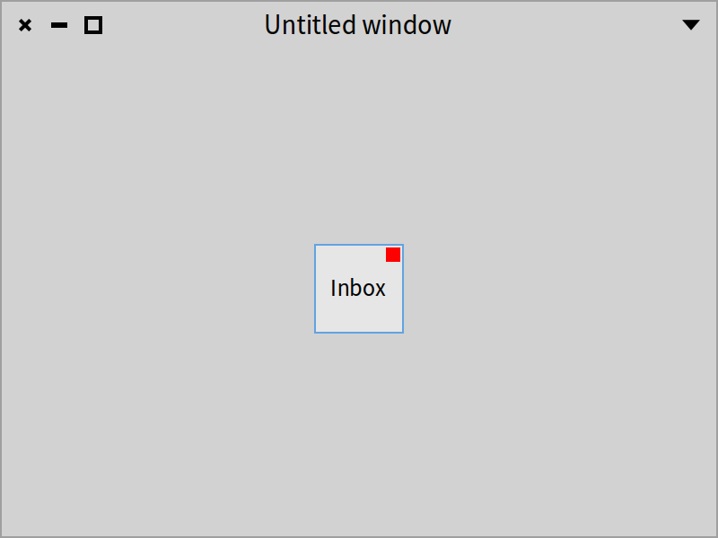
The method initializePresenters creates the button and the indicator. The latter is a SpRoassalPresenter. We use a helper method to answer the shape that should be shown.
OverlayLayoutExample >> initializePresenters
button := self newButton
label: 'Inbox';
yourself.
indicator := (self instantiate: SpRoassalPresenter)
script: [ :view | view addShape: self indicatorShape ];
yourselfOverlayLayoutExample >> indicatorShape
^ RSBox new
extent: 10@10;
color: Color red;
yourselfTo make the structure of the layout clear, we have three methods. The defaultLayout is the layout of the window. For demonstration purposes, we put the button in the middle of the window. The button's dimensions are 50 by 50 pixels.
OverlayLayoutExample >> defaultLayout
| buttonVBox |
buttonVBox := SpBoxLayout newTopToBottom
vAlignCenter;
add: self buttonLayout height: 50;
yourself.
^ SpBoxLayout newLeftToRight
hAlignCenter;
add: buttonVBox width: 50;
yourselfThe defaultLayout method sends the message buttonLayout to fetch the overlay layout for the button and the indicator.
Let us define the method buttonLayout as follows:
OverlayLayoutExample >> buttonLayout
^ SpOverlayLayout new
child: button;
addOverlay: self indicatorLayout
withConstraints: [ :constraints |
constraints vAlignStart; hAlignEnd ];
yourselfThe child is the presenter that we want to overlay with the indicator. It is possible to add multiple overlays. In this example, we have only one, which is defined by indicatorLayout. Note that addOverlay:withConstraints: is used to configure where the overlay presenter should be displayed. We display it in the top-right corner, by sending vAlignStart (top) and hAlignEnd (right).
Now we define the method indicatorLayout as follows:
OverlayLayoutExample >> indicatorLayout
| counterVBox |
counterVBox := SpBoxLayout newTopToBottom
add: indicator withConstraints: [ :constraints |
constraints height: 12; padding: 2 ];
yourself.
^ SpBoxLayout newLeftToRight
add: counterVBox withConstraints: [ :constraints |
constraints width: 12; padding: 2 ];
yourselfThe indicatorLayout method defines the layout for the indicator. To apply a vertical and a horizontal padding, we have to wrap a vertical box layout with a horizontal box layout. We could have wrapped a horizontal box layout with a vertical box layout to achieve the same result. We apply a padding of 2 pixels so that the indicator does not overlap the border of the button.
With all these methods in place, we can open the presenter.
OverlayLayoutExample new open.That opens the window shown in Figure 10.15.
10.17 Conclusion
Spec offers several predefined layouts. Probably new ones will be added but in a compatible way. An important closing point is that layouts can be dynamically composed. It means that you are able to design applications that can adapt to specific conditions.